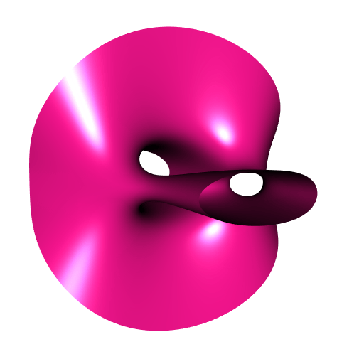
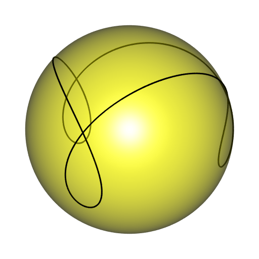
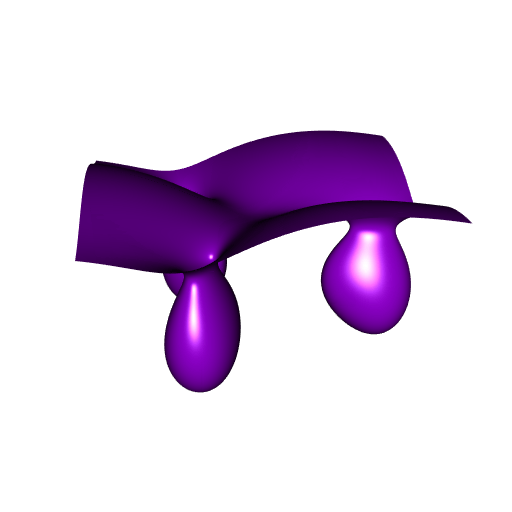
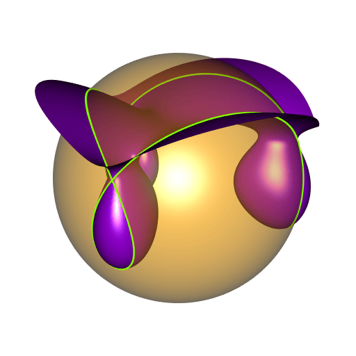

Implicitization for the spherical trochoid
If you didn’t read or if you don’t remember my post Using implicitization to split a ball, take a look at it before reading this one. To sum up, I took a spherical curve, namely a satellite curve, and I derived a surface whose intersection with the sphere is the satellite curve. I did that thanks to the so-called implicitization process, based on Gröbner bases, and which can be performed with the giacR package.
What I like with this process is that it’s almost impossible to guess the shape of the derived surface when a spherical curve is given. For example, I still played with the satellite curves and using this process for different values of the parameters, I obtained this funny animated surface:

You can find the code which generates this animation in this gist.
Now we will see what happens when applying this process to a spherical trochoid, a very interesting curve.
The parametric equations of the spherical trochoid are \[ \left\{\begin{aligned} x(t) & = \bigl(qb-b\cos(\omega)+d\cos(\omega)\cos(qt)\bigr)\cos(t)+d\sin(t)\sin(qt) \\ y(t) & = \bigl(qb-b\cos(\omega)+d\cos(\omega)\cos(qt)\bigr)\sin(t)-d\cos(t)\sin(qt) \\ z(t) & = \sin(\omega)\bigl(b-d\cos(qt)\bigr) \end{aligned}\right.. \]
As suggested by its name, the spherical trochoid is a spherical curve. Namely, it is a curve lying on the sphere with center \((0, 0, h)\) and radius \(R\) given by \[ h = \frac{b-a\cos(\omega)}{\sin(\omega)} \qquad \textrm{and} \qquad R = \sqrt{a^2+h^2+d^2-b^2} \] where \(a = qb\).
Type “spherical trochoid” on Google or another web search engine, you will find some valuable information, including some animations showing the geometric construction of the spherical trochoid.
Let’s write these equations in R with \(q = 3\) as a function of \(t\), and let’s do a plot:
sphericalTrochoid <- function(t) {
A <- cos(omega)
B <- sin(omega)
f <- 3*b - b*A + d*A*cos(3*t)
cbind(
f * cos(t) + d * sin(t)*sin(3*t),
f * sin(t) - d * cos(t)*sin(3*t),
B * (b - d*cos(3*t))
)
}
# parameters
omega <- 1.4
b <- 5
d <- 10
# sampling
t_ <- seq(0, 2*pi, length.out = 360L)
stSample <- sphericalTrochoid(t_)
# we will plot the supporting sphere as well
a <- 3*b
h <- (b - a*cos(omega)) / sin(omega) # altitude of center
R <- sqrt(a^2 + h^2 + d^2 - b^2) # radiuslibrary(rgl)
sphereMesh <- cgalMeshes::sphereMesh(z = h, r = R, iterations = 5L)
open3d(windowRect = 50 + c(0, 0, 512, 512), zoom = 0.7)
shade3d(sphereMesh, color = "yellow", alpha = 0.2, polygon_offset = 1)
lines3d(stSample, lwd = 3)
Note that \(q=3\) corresponds to the number of loops.
Now, let’s proceed as in the post Using implicitization to split a ball: using the Gröbner implicitization implemented in the giacR package, we shall derive an equation of an implicit surface whose intersection with the sphere is the spherical trochoid. We provide the polynomial expressions of \(\cos(3t)\) and \(\sin(3t)\) in function of \(\cos(t)\) and \(\sin(t)\), which can be obtained with giacR as well.
library(giacR)
equations <- paste(
"x = (3*b - b*A + d*A*cos3t)*cost + d*sint*sin3t",
"y = (3*b - b*A + d*A*cos3t)*sint - d*cost*sin3t",
"z = B*(b - d*cos3t)",
sep = ", "
)
relations <- paste(
"A^2 + B^2 = 1",
"cost^2 + sint^2 = 1",
"cos3t = 4*cost^3 - 3*cost",
"sin3t = (4*cost^2 - 1)*sint",
sep = ", "
)
variables <- "cost, sint, cos3t, sin3t"
constants <- "A, B, b, d"
giac <- Giac$new()
results <- giac$implicitization(equations, relations, variables, constants)
giac$close()
## [1] TRUE
length(results)
## [1] 24Thus, giacR provides \(24\) polynomial expressions, each equal to \(0\). I don’t know what are all these expressions. The last one is nothing but "A^2+B^2-1". I tried a couple of them, I found that the eleventh one provides what we’re looking for, and then I retained this one. It is a long expression:
( fxyz <- results[11L] )
## [1] "12*x^6*A*z-36*x^2*A*d^4*z+24*A*d^6*z+36*x^4*A*y^2*z-36*A*d^4*y^2*z+36*x^2*A*y^4*z+12*A*y^6*z+45*x^4*A*z^3-18*x^2*A*d^2*z^3-27*A*d^4*z^3+90*x^2*A*y^2*z^3-18*A*d^2*y^2*z^3+45*A*y^4*z^3+54*x^2*A*z^5-18*A*d^2*z^5+54*A*y^2*z^5+21*A*z^7+16*x^6*b*B-96*x^4*b^3*B+2176*x^2*b^5*B-7168*b^7*B+48*x^5*b*d*B-1920*x^3*b^3*d*B+120*x^4*b*d^2*B+768*x^2*b^3*d^2*B+13184*b^5*d^2*B-48*x^3*b*d^3*B-240*x^2*b*d^4*B-2592*b^3*d^4*B+104*b*d^6*B+48*x^4*b*y^2*B-192*x^2*b^3*y^2*B+2176*b^5*y^2*B-96*x^3*b*d*y^2*B+5760*x*b^3*d*y^2*B+240*x^2*b*d^2*y^2*B+768*b^3*d^2*y^2*B+144*x*b*d^3*y^2*B-240*b*d^4*y^2*B+48*x^2*b*y^4*B-96*b^3*y^4*B-144*x*b*d*y^4*B+120*b*d^2*y^4*B+16*b*y^6*B-40*x^4*b*z^2*B+192*x^2*b^3*z^2*B-4480*b^5*z^2*B+48*x^3*b*d*z^2*B+344*x^2*b*d^2*z^2*B+3264*b^3*d^2*z^2*B-256*b*d^4*z^2*B-80*x^2*b*y^2*z^2*B+192*b^3*y^2*z^2*B-144*x*b*d*y^2*z^2*B+344*b*d^2*y^2*z^2*B-40*b*y^4*z^2*B-182*x^2*b*z^4*B-1008*b^3*z^4*B+278*b*d^2*z^4*B-182*b*y^2*z^4*B-126*b*z^6*B-12*x^6*z+64*x^4*b^2*z+1280*x^2*b^4*z-7168*b^6*z-384*x^3*b^2*d*z+72*x^4*d^2*z+64*x^2*b^2*d^2*z+1792*b^4*d^2*z-108*x^2*d^4*z-512*b^2*d^4*z+48*d^6*z-36*x^4*y^2*z+128*x^2*b^2*y^2*z+1280*b^4*y^2*z+1152*x*b^2*d*y^2*z+144*x^2*d^2*y^2*z+64*b^2*d^2*y^2*z-108*d^4*y^2*z-36*x^2*y^4*z+64*b^2*y^4*z+72*d^2*y^4*z-12*y^6*z-45*x^4*z^3-128*x^2*b^2*z^3-2688*b^4*z^3+162*x^2*d^2*z^3+896*b^2*d^2*z^3-117*d^4*z^3-90*x^2*y^2*z^3-128*b^2*y^2*z^3+162*d^2*y^2*z^3-45*y^4*z^3-54*x^2*z^5-336*b^2*z^5+90*d^2*z^5-54*y^2*z^5-21*z^7"This expression is equal to \(0\), and this provides an isosurface whose intersection with the above sphere is the spherical trochoid. Let’s plot it.
library(rmarchingcubes)
A <- cos(omega)
B <- sin(omega)
f <- function(x, y, z) {
eval(parse(text = fxyz))
}
n <- 300L
x_ <- y_ <- seq(-R*1.1, R*1.1, length.out = n)
z_ <- seq(h - R - 0.1, h + R + 0.1, length.out = n)
Grid <- expand.grid(X = x_, Y = y_, Z = z_)
voxel <- with(Grid, array(f(X, Y, Z), dim = c(n, n, n)))
surf <- contour3d(voxel, level = 0, x_, y_, z_)
mesh <- tmesh3d(
vertices = t(surf$vertices),
indices = t(surf$triangles),
normals = surf$normals
)
# plot
open3d(windowRect = 50 + c(0, 0, 512, 512))
shade3d(mesh, color = "darkviolet")
We get our surface! We will plot it along with the sphere and the curve. But I prefer to round its corners before, by clipping it to a horizontal cylinder.
# clip the mesh to a cylinder
fn <- function(x, y, z) x*x + y*y
cmesh <- clipMesh3d(mesh, fn, bound = (R*1.1)^2, greater = FALSE)
# plot everything
open3d(windowRect = 50 + c(0, 0, 512, 512), zoom = 0.75)
shade3d(sphereMesh, color = "orange", alpha = 0.4, polygon_offset = 1)
shade3d(cmesh, color = "darkviolet", polygon_offset = 1)
lines3d(stSample, lwd = 3, color = "chartreuse")